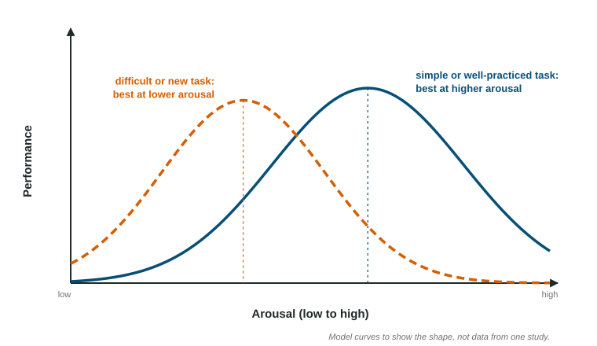

Motivation
Motivation theories explain different behavior: instincts for fixed animal patterns, drive-reduction for body needs and homeostasis, incentives for outside pulls, arousal theory and the Yerkes-Dodson law for the best level of arousal, and self-determination theory for intrinsic motivation, which expected rewards can undermine (the overjustification effect).
Part 1 · Hook
Why this matters
Part 2 · Before you start
What this builds on
Part 3 · Prerequisite check
Quick check before you start
1. Which brain structure helps keep the body's internal balance, including hunger and thirst?
- Hypothalamus
- Cerebellum
- Occipital lobe
- Broca's area
Show the answer
The hypothalamus regulates hunger, thirst, body temperature and other parts of homeostasis.
- Correct: Hypothalamus:
- Cerebellum:
- Occipital lobe:
- Broca's area:
2. A child gets a sticker every time she cleans her room, and she cleans more often. Which concept explains the increase?
- Positive reinforcement
- Negative punishment
- Habituation
- Extinction
Show the answer
Adding something pleasant after a behavior makes it more likely: positive reinforcement.
- Correct: Positive reinforcement:
- Negative punishment:
- Habituation:
- Extinction:
Part 4 · See it
See it first

Part 5 · Step by step
How it works, step by step
- The body lacks something it needs, such as watera drive (thirst) pushes you to act, and drinking restores homeostasis: drive-reduction theory
- An attractive reward is in view, such as dessertit pulls behavior even without a body need: incentive theory
- Arousal is too low or too high for the taskperformance drops; it is best at a moderate level, lower for hard tasks (Yerkes-Dodson law)
- An expected reward is given for something you already enjoyyour reason shifts to the reward and intrinsic motivation can fall (overjustification effect)
Part 6 · Key ideas
Key ideas
- Instinct theory fits fixed, unlearned patterns in animals. Drive-reduction: needs create drives that push us toward homeostasis. Incentive theory: outside rewards pull us.
- Arousal theory: we seek an optimal level of arousal. The Yerkes-Dodson law says performance peaks at moderate arousal, lower for hard tasks. Sensation seekers prefer high arousal.
- Self-determination theory: needs for autonomy, competence and relatedness. Intrinsic motivation comes from the activity; extrinsic from rewards. Expected rewards can undermine intrinsic interest (overjustification).
- Hunger: ghrelin (stomach) signals hunger, leptin (fat cells) signals stored energy, the hypothalamus integrates them; external cues also trigger eating. The need to belong is a basic motive.
Part 7 · Misconception
A common mistake
The wrong idea: Any reward will kill a person's interest in an activity.
What actually happens: The undermining effect is strongest for expected, tangible rewards given just for doing a task the person already enjoys. Surprise rewards and specific praise for good work usually do not lower interest, and rewards can help with tasks no one enjoys.
Part 8 · Check yourself
Check yourself
Exam-style questions. Anything you miss goes into your review queue.
1. After a long run on a hot day, Tomas feels thirsty and drinks until the feeling goes away. Which theory of motivation best explains his behavior?
- Drive-reduction
- Incentive theory
- Arousal theory
- Instinct theory
Show the answer
Drive-reduction theory: a need creates a drive, and behavior reduces it, restoring homeostasis.
- Correct: Drive-reduction: Right: a body need (water) creates a drive (thirst) that pushes him to act until balance is restored.
- Incentive theory: Incentive theory stresses a pull from outside rewards; here an inner need is pushing him.
- Arousal theory: Arousal theory is about seeking a best level of stimulation, not restoring water balance.
- Instinct theory: Instinct theory explains fixed, unlearned patterns in animals, not a learned choice to drink.
2. Liam has just eaten a large dinner and feels full, yet he orders dessert when he sees the cheesecake on the menu. Which theory best explains this choice?
- Drive-reduction theory
- Instinct theory
- Incentive theory
- Self-determination theory
Show the answer
Incentives are outside rewards that pull behavior, even when no drive is present.
- Drive-reduction theory: His hunger drive is already reduced, so it cannot explain eating more.
- Instinct theory: Choosing cheesecake from a menu is not a fixed, unlearned behavior pattern.
- Correct: Incentive theory: Right: an attractive outside stimulus pulls him to act even without a body need.
- Self-determination theory: Self-determination theory is about needs for autonomy, competence and relatedness, not dessert.
Figure
The Yerkes-Dodson relationship
3. According to the figure, what happens to performance as arousal rises from very low to very high?
- It rises to a peak, then falls
- It rises steadily the whole way
- It falls steadily the whole way
- It stays flat until arousal is high
Show the answer
The Yerkes-Dodson law: performance is best at a moderate level of arousal.
- Correct: It rises to a peak, then falls: Right: both curves are inverted U shapes, with the best performance at a moderate level.
- It rises steadily the whole way: Both curves turn down at high arousal.
- It falls steadily the whole way: Both curves rise first, from very low arousal.
- It stays flat until arousal is high: Both curves start rising well before arousal is high.
4. A skilled typist and a beginner both take a typing test in a loud, high-pressure room. Based on the figure, who is more likely to perform worse than usual?
- The skilled typist, because high arousal harms well-practiced tasks most
- Neither, because arousal does not affect typing
- The beginner, because for a new task performance drops at a lower level of arousal
- Both equally, because their curves have the same shape and peak
Show the answer
Difficult or unfamiliar tasks are best at lower arousal; simple or well-learned ones tolerate more.
- The skilled typist, because high arousal harms well-practiced tasks most: For a well-practiced task the solid curve still performs well at fairly high arousal.
- Neither, because arousal does not affect typing: The figure shows that arousal affects performance on both kinds of task.
- Correct: The beginner, because for a new task performance drops at a lower level of arousal: Right: the dashed curve, for difficult or new tasks, peaks at lower arousal and falls sooner.
- Both equally, because their curves have the same shape and peak: The curves peak at different levels of arousal.
5. A coach wants her team, who are experts at a simple drill, to perform it at their best. Using the figure, what level of arousal should she aim for?
- As low as possible, so players stay fully relaxed
- Fairly high, near the peak of the solid curve
- As high as possible, because more arousal keeps helping
- Low, near the peak of the dashed curve
Show the answer
For simple, well-learned tasks, the best arousal is moderately high.
- As low as possible, so players stay fully relaxed: At very low arousal, the solid curve is near the bottom.
- Correct: Fairly high, near the peak of the solid curve: Right: a simple, well-practiced task peaks at a higher level of arousal.
- As high as possible, because more arousal keeps helping: Past the peak, even the solid curve falls.
- Low, near the peak of the dashed curve: The dashed curve is for difficult or new tasks, not a drill the team knows well.
6. A child loves drawing. Her parents start paying her a dollar for every drawing. Months later the payments stop, and she draws much less than she did before the payments began. Which concept best explains the drop?
- Extinction of a conditioned response
- Drive-reduction theory
- The overjustification effect
- Sensation seeking
Show the answer
Expected, tangible rewards for an already enjoyed task can undermine intrinsic motivation.
- Extinction of a conditioned response: Extinction explains a return toward the starting level; she now draws less than she did before any payment.
- Drive-reduction theory: No body need is involved in drawing.
- Correct: The overjustification effect: Right: an expected reward for something she already enjoyed shifted her reason to the reward, lowering her intrinsic interest.
- Sensation seeking: Sensation seeking describes craving intense experiences, not a loss of interest.
7. Omar wants to try out for the school play because he loves acting, but the idea of performing in front of the whole school terrifies him. Which kind of conflict is he facing?
- Approach-approach
- Avoidance-avoidance
- Displacement
- Approach-avoidance
Show the answer
Approach-avoidance: one goal with both attractive and unattractive features.
- Approach-approach: He is not choosing between two attractive goals.
- Avoidance-avoidance: He is not choosing between two unpleasant options.
- Displacement: Displacement is a defense mechanism, not a conflict between goals.
- Correct: Approach-avoidance: Right: one goal, the play, both attracts him and frightens him.
Part 9 · Summary
Summary
Part 10 · Up next
What comes next
Part 11 · Connections